Donner vie aux visions. Capturer les instants. Faire rayonner les messages.
GODTALK est aujourd'hui une vision d'entreprise en phase de conception. Le projet ne dispose pas encore de l'ensemble des équipements, des compétences spécialisées, des locaux ni de l'équipe nécessaires.
Ce document pose une direction, un positionnement et une feuille de route réaliste pour construire progressivement une entreprise audiovisuelle professionnelle.
Les services décrits sont les activités visées à terme. Leur lancement se fera par étapes, selon les compétences acquises, les partenariats disponibles, les moyens financiers et la demande réelle.
Aucun chiffre de marché, aucune prévision financière, aucun client ni aucune réalisation n'y sont avancés.
Projet en conceptionNous croyons qu'une image juste porte un message plus loin qu'un long discours. Qu'un événement bien filmé continue de vivre après la dernière note. Qu'une salle bien équipée change la manière dont une parole est reçue.
GODTALK n'est pas encore l'entreprise qu'elle veut devenir. C'est une décision : celle d'apprendre, d'investir, de s'entourer des bonnes compétences et de construire, étape par étape, une maison audiovisuelle complète.
Avec une exigence, la qualité. Une méthode, la préparation. Une promesse, la fiabilité. Et la conviction que des histoires nées ici peuvent toucher des publics partout dans le monde.
Donner vie aux visions.
Capturer les instants.
Faire rayonner les messages.
GODTALK est un projet d'entreprise audiovisuelle moderne, créative et évolutive, imaginé pour accompagner particuliers, entreprises, institutions, organisations et acteurs culturels dans la création de contenus visuels et sonores de qualité.
Construire une entreprise audiovisuelle capable de concevoir, produire, diffuser et installer des solutions audiovisuelles adaptées à ses clients, avec une exigence professionnelle et une ambition internationale.
Entreprises, institutions, églises, artistes et associations ont des choses importantes à dire. La qualité de l'image, du son et de la diffusion conditionne la manière dont ces messages sont reçus, compris et retenus.
Plutôt que de multiplier les intervenants, un client devrait pouvoir s'appuyer sur un partenaire qui comprend son besoin global, de la préparation à la captation, de la réalisation à la diffusion et à l'installation technique.
Les cultures, les entreprises et les initiatives africaines ont leur place sur les écrans du monde. GODTALK veut contribuer à les raconter avec l'exigence des standards internationaux.
Un partenaire audiovisuel polyvalent, qui propose une solution cohérente plutôt qu'une prestation isolée.
Ces convictions restent à confronter au terrain : les besoins réels du marché feront l'objet d'une étude dédiée avant tout engagement financier important.
Devenir une référence africaine de la production audiovisuelle et des expériences en direct, reconnue pour sa créativité, sa maîtrise technique, sa fiabilité et sa capacité à raconter des histoires qui ont du sens.
Créer et diffuser des contenus audiovisuels de qualité, mettre en valeur les événements et les messages de nos clients, et concevoir des environnements techniques qui rendent l'image et le son plus professionnels.
Développer une structure capable de travailler sur des événements de grande envergure, des productions de films, des retransmissions en direct et des installations audiovisuelles, en s'appuyant sur la formation continue, les partenariats et un investissement progressif.
Donner vie aux visions. Capturer les instants. Faire rayonner les messages.
Rechercher une qualité constante dans la préparation, la production, la livraison et la relation client.
Imaginer des récits et des formats originaux, adaptés à chaque public et à chaque objectif.
Respecter les engagements, les délais, les budgets et les exigences convenues.
Travailler avec transparence, honnêteté et respect des personnes, des contenus et des droits, y compris dans l'usage de l'IA.
Reconnaître les compétences à acquérir et investir dans la formation, la pratique et le mentorat.
Mettre l'image, le son et la narration au service des entreprises, des communautés et des histoires importantes.
« Ne vendre que ce que l'on sait livrer, et apprendre chaque jour à livrer davantage. »
Ces valeurs s'appliqueront dès la première prestation : devis écrits, périmètre clair, respect des délais et transparence sur ce qui est réalisé en interne ou avec des partenaires.
GODTALK ne se limite pas à la photo ou à la vidéo. L'objectif est de réunir progressivement les expertises qui permettent de concevoir, produire, installer et diffuser une expérience audiovisuelle complète. Certaines prestations seront, au départ, réalisées avec des partenaires spécialisés.
| Pôle | Concevoir | Produire | Installer | Diffuser |
|---|
Cœur du pôle Contribution
Communiquer de manière professionnelle : contenus institutionnels, campagnes, événements, retransmissions.
Agences, hôtels, centres de conférence et promoteurs culturels : captation, diffusion, grands formats.
Production et diffusion des cultes et conventions, équipement durable des salles.
Musiciens, réalisateurs, créateurs de contenus et producteurs : clips, visuels, créations assistées par IA.
Des souvenirs de qualité pour les mariages, cérémonies et événements familiaux importants.
Documenter les activités, rendre compte de l'impact et sensibiliser les publics.
Équipement d'auditoriums, captation de conférences, contenus pédagogiques.
Productions, coproductions et prestations pour des projets menés dans plusieurs pays.
Aucune donnée de marché n'est avancée à ce stade.
Au démarrage, la priorité est de vendre des prestations maîtrisables, de louer le matériel lorsque c'est plus raisonnable, et de réinvestir une partie des revenus dans la formation et les outils de travail.
Forfaits photo, vidéo, montage, reportage et couverture d'événements.
Production régulière de contenus pour entreprises, institutions, marques et organisations.
Tarification selon la durée, le nombre de caméras, la complexité technique et la diffusion.
Étude, fourniture ou coordination du matériel, installation, configuration et formation.
Clips, motion design, prévisualisation et contenus de marque produits avec des outils génératifs.
Collaborations avec studios, agences et producteurs ; productions propres lorsque les ressources le permettront.
Les prévisions chiffrées ne seront établies qu'après la collecte des prix locaux, des coûts de location, des charges et des premiers retours clients.
Ces étapes sont des orientations, non des promesses de résultats ni des échéances garanties. Le passage de l'une à l'autre dépendra des compétences réellement acquises, de la demande constatée et des ressources disponibles.
Bâtir une base opérationnelle solide, une réputation fondée sur la qualité et la fiabilité, et un portfolio de référence.
Répondre à des projets régionaux lorsque les standards opérationnels sont solides, avec des partenaires de confiance.
Travailler avec des clients et coproducteurs partout dans le monde, et diffuser des productions capables de toucher des publics internationaux.
L'expansion ne sera pas un objectif d'image : elle reposera sur la qualité du portfolio, la satisfaction des clients, des partenariats fiables et la capacité à livrer dans les délais.
GODTALK n'est pas seulement l'idée de créer une agence. C'est la volonté de bâtir, étape par étape, une entreprise audiovisuelle capable de réunir la création, la technique et la diffusion au service d'histoires et de projets importants.
Je sais d'où je pars. Je ne dispose pas encore de tous les équipements, de toute l'équipe ni de toutes les compétences que ce projet exige. Ce document ne cherche pas à le cacher : il trace le chemin pour les acquérir.
La suite se construira projet après projet, client après client, image après image.
« Ensemble, donnons vie
aux plus belles histoires. »
Donner vie aux visions.
Capturer les instants.
Faire rayonner les messages.